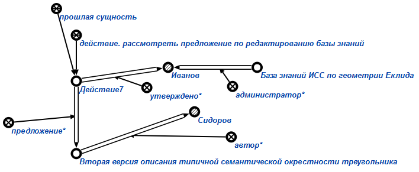

Задачей агента утверждения администратором предложения по редактированию базы знаний является утверждение администратором предложения, описывающего изменения, вносимые разработчиком в базу знаний (включая и проектное задание). Данный агент инициируется при условии появления в памяти вопросной конструкции, соответствующей действию. утвердить администратором предложение по редактированию базы знаний. Единственным аргументом запроса является знак действия. рассмотреть предложение по редактированию базы знаний или знак действия. рассмотреть новое проектное задание.
Возможные результаты работы агента:
- Если первый аргумент знака действию. утвердить администратором предложение по редактированию базы знаний не является знаком действия. рассмотреть предложение по редактированию базы знаний или знаком действия. рассмотреть новое проектное задание, то генерируется сообщение об ошибке (Wrong 1st parameter! It must be sign of action_to_consider_proposal_for_editing_knowledge_base or sign of action_to_consider_new_project_task).
- Если пользователь, инициировавший выполнение агента, не является администратором, то генерируется сообщение "Access denied. User must be a administrator."
- В случае успешного выполнения агента генерируется связка отношения утверждено* (см рисунок). Знак действия. рассмотреть предложение по редактированию базы знаний или знак действия. рассмотреть новое проектное задание становится прошлой сущностью, удаляется из текущих процессов развития компьютерной системы и добавляется в историю развития компьютерной системы.
- Если на вход был подан знак действия. рассмотреть новое проектное задание, то от данного знака действия будет найдено предложение, и будет инициирован знак действия из данного предложения, обозначающий проектное задание (от знака действия отходит отношение цель*). Знак проектного задания добавляется в план развития компьютерной системы.
- Если на вход был подан знак действия. рассмотреть предложение по редактированию базы знаний, то содержимое предложения добавляется либо в конкретный раздел базы знаний (раздел указан под отношением объект*), либо в предметную часть базы знаний.
